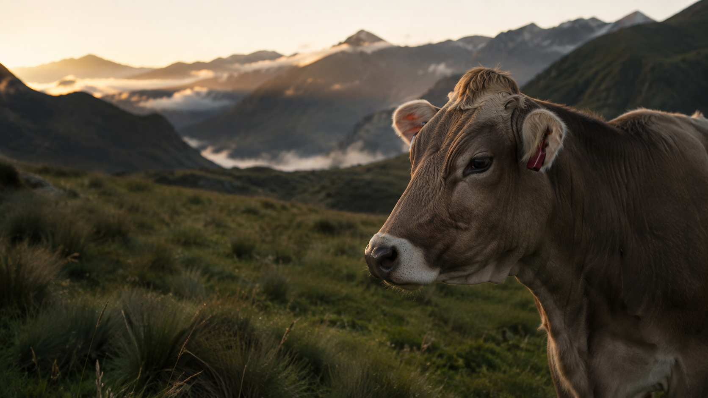
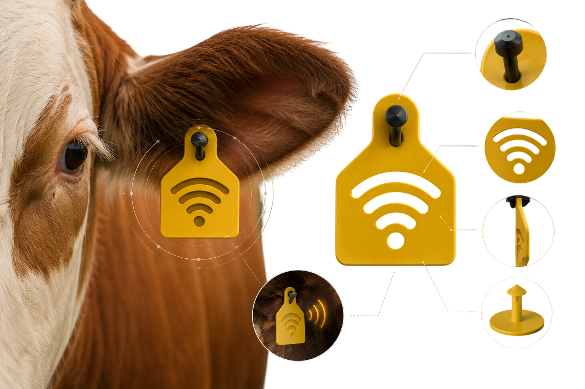
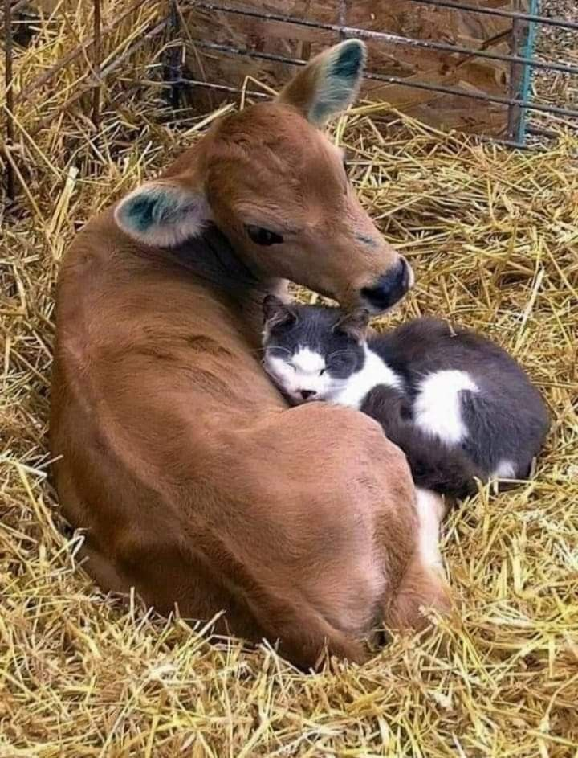
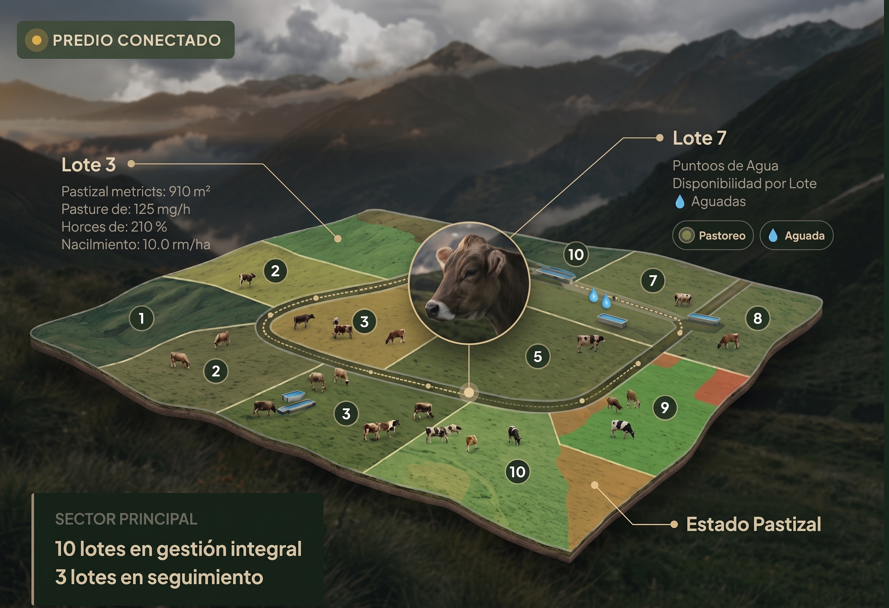

Tecnología pensada para la ganadería que conecta la información de cada ejemplar.


Somos una empresa peruana que innova la ganadería con tecnología cercana, útil y pensada para la realidad del campo.
Desde 2026 desarrollamos ICHU: una plataforma que reúne la información de cada ejemplar, las señales del hato y el acompañamiento veterinario para tomar decisiones oportunas y cuidar mejor cada producción.
+La labor ganadera genera datos todos los días. Sin embargo, gran parte de este conocimiento se pierde o se queda fragmentado.
Cuadernos de campo y notas sueltas que dificultan reconstruir el historial completo y continuo de cada animal cuando se necesita con urgencia.
Un descenso en el pastoreo, una variación térmica o un aislamiento en el potrero suelen notarse cuando el problema ya ha avanzado, elevando costos y riesgos.
Cuando el médico veterinario llega al corral, muchas veces debe evaluar sin contar con la bitácora previa de síntomas, dosis aplicadas o fechas exactas.
Supervisar la rotación de parcelas de pasto, la disponibilidad de aguadas y la ubicación de grupos de animales en terrenos amplios requiere tiempo constante.
Llevar un recuento claro de forraje adicional, tratamientos y mermas resulta complejo cuando no existe una estructura organizada para el registro.
Dificultad para alinear lo que observa el personal de campo, lo que registra el administrador y las pautas que indica el especialista veterinario.
ICHU es una plataforma pensada para ayudar a ganaderos y veterinarios a organizar y entender mejor la información de cada animal y del campo.
Diseñado para simplificar la jornada de trabajo. Un espacio claro para tener el control de su ganado en la palma de la mano.
Acceda a un historial cronológico fidedigno. Conozca qué ocurrió con el animal en los días previos, revise tendencias y respalde sus diagnósticos con datos contextuales reales.
“El veterinario ve más contexto. El ganadero recibe mejor acompañamiento.”
.jpg)

La ganadería no es una hoja de cálculo estática: es un ciclo biológico vivo. ICHU organiza los hitos fundamentales de la vida de cada ejemplar para preservar su memoria productiva y sanitaria desde sus primeros días.
ICHU está siendo concebida para conectarse progresivamente con dispositivos de telemetría e Internet de las Cosas (IoT) diseñados para soportar el clima y las condiciones de nuestra geografía.
Monitoreo de oscilaciones térmicas para identificar tempranamente cuadros febriles, estrés calórico o alteraciones metabólicas antes de síntomas visibles.
Detección de índices de actividad física, rumiación, tiempo de descanso o letargo que puedan sugerir malestar, celo o inicio de parto.
Localización por sectores y potreros para prevenir pérdidas por extravío, optimizar el pastoreo rotativo y resguardar la seguridad del ganado.
Las alertas de ICHU funcionan como un llamado de atención oportuno para que el ganadero o veterinario inspeccione al animal a tiempo.
El animal depende de sus pasturas, el agua y la administración del predio. ICHU ayuda a visualizar la finca como una operación ordenada.

Pastoreo AguadaAdministre la rotación de forraje, planifique los suministros hídricos y mantenga un inventario vivo de animales sin depender de hojas sueltas.
Disponibilidad en bebederos.
Recuperación de canchas.
Control de forraje y fármacos.
Nacimientos y traslados.
La gestión ganadera involucra compromisos sanitarios y normativas oficiales. ICHU busca facilitar la organización de información útil para la gestión productiva y veterinaria, dentro del marco de las obligaciones aplicables a cada actividad.
Ministerio de Desarrollo Agrario y Riego: Políticas de desarrollo pecuario, pastos y fomento productivo.
Portal institucionalServicio Nacional de Sanidad Agraria: Calendarios de vacunación oficial, control zoosanitario y aretado.
Normativa sanitariaPPA (MIDAGRI): Registro oficial para la identificación y acceso a servicios del Estado.
Información PPAEstamos construyendo una nueva forma de conectar tecnología, ganadería y acompañamiento veterinario. Déjanos tus datos para coordinar una presentación guiada.
El campo sabe. ICHU ayuda a convertir ese conocimiento en información clara y oportuna para proteger el fruto de tu trabajo.
Solicitar una demostración